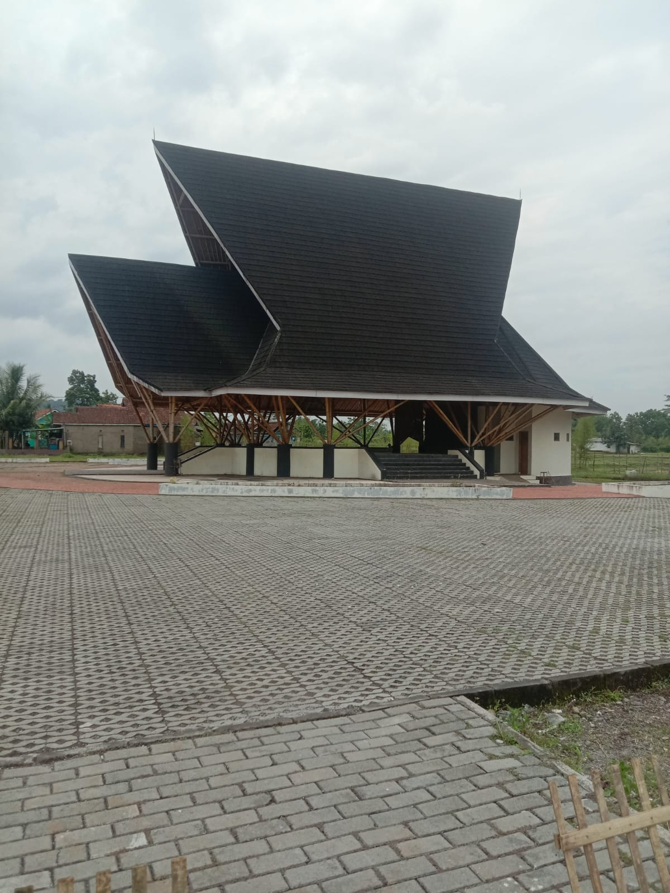

"Setiap ruang memiliki cerita. Setiap karya memiliki jiwa. Dan setiap bambu yang kami olah menyimpan warisan alam yang layak diteruskan kepada generasi berikutnya."
Bumi Seni Nusantara hadir bukan sekadar sebagai pengrajin bambu. Kami adalah studio kreatif yang memadukan seni, desain, konstruksi, dan kearifan lokal untuk menciptakan karya yang bernilai tinggi.
Berawal dari Bumi Seni Nusantara, tempat para pengrajin dan seniman tumbuh bersama selama bertahun-tahun, kami membangun sebuah ekosistem kreatif yang menghubungkan tradisi dengan kebutuhan arsitektur dan pariwisata modern.
Melalui tangan-tangan terampil para pengrajin, kami menghadirkan karya yang mengutamakan kualitas, keindahan, fungsi, serta keberlanjutan.
Galeri Portofolio & Video Karya
Dokumentasi visual hasil karya konstruksi bambu, seni pahat, dan kerajinan eksklusif
Video Dokumentasi Proyek
🎥 Dokumentasi Proses & Pengerjaan Karya 1
🎥 Dokumentasi Proses & Pengerjaan Karya 2
🎥 Showcase Utama Proyek Bumi Seni Nusantara
Dokumentasi Foto Karya

Patung Figuratif Anyaman Bambu
Karya seni kriya anyaman dan pahat bambu halus, menampilkan figur wanita Jawa bersimpuh dengan tatakan anyaman heksagonal.

Arsitektur & Konstruksi Bambu
Struktur bangunan bambu megah dengan desain atap artistik yang kuat dan estetis.

Seni Ukir Akar Kayu & Tongkat Artistik
Pemanfaatan akar kayu alami menjadi mahakarya pahatan ukir detail yang eksklusif.

Seni Pahat Patung & Ornamen Kayu
Detail pahatan figuratif burung dan relief alam yang dikerjakan secara teliti oleh seniman berpengalaman.

Interior & Detail Dinding Bambu
Sentuhan dinding anyaman dan pilar bambu pilihan untuk memperkuat karakter ruang.

Kerajinan & Kriya Bambu
Produk kerajinan dan sangkar artistik dengan detail pengerjaan tingkat tinggi.
Tentang Kami
Bumi Seni Nusantara berfokus pada pengembangan karya bambu, kayu, seni rupa, dan landscape artistik. Kami melayani berbagai kebutuhan proyek mulai dari resort, hotel, villa, restoran, café, kawasan wisata, ruang publik, hingga